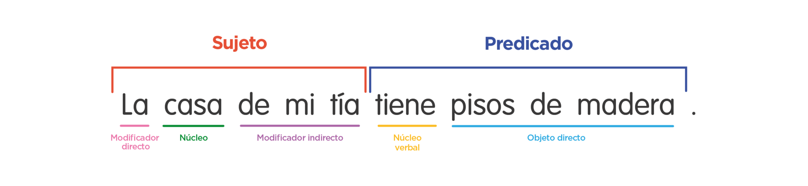
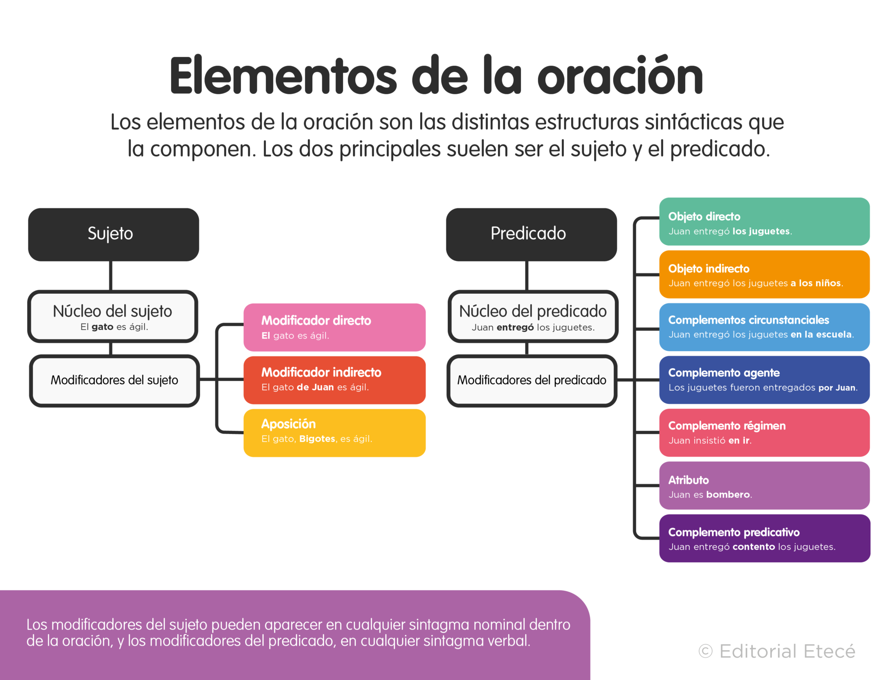

ELEMENTOS DE LA ORACIÓN
Todas las oraciones bimembres se dividen en dos grandes estructuras principales:
Sujeto. Es la estructura que indica quién lleva a cabo la acción o el elemento sobre el cual
se predica.
Para reconocerlo, se puede preguntar al verbo qué o quién realiza la acción. Por ejemplo: La
multitud gritaba eufórica.
¿Quién gritaba eufórica? La multitud. También se puede cambiar el número al verbo y
observar qué estructura se ve afectada.
Por ejemplo: Las multitudes gritaban eufóricas.
Predicado. Es la estructura que detalla la acción que realiza el sujeto. Para identificarlo,
podemos preguntar al sujeto qué es, qué hace o qué acción realiza.
Por ejemplo: La multitud gritaba eufórica. ¿Qué hacía la multitud? Gritaba
eufórica.

¿Cuáles son los elementos de una oración?

Elementos presentes en el sujeto
En el sujeto, podemos encontrar los siguientes elementos:
Núcleo
El núcleo del sujeto forma parte de un sintagma nominal y se trata de aquel que realiza la accion
del verbo. Puede ser:
- Sustantivo común. Por ejemplo: La caja está vacía.
- Sustantivo propio. Por ejemplo: Juana llego tarde.
- Pronombre. Por ejemplo: Yo te voy a enseñar.
Modificadores
El núcleo del sujeto puede contar con las siguientes estructuras que lo modifican o amplían su
información:
- Modificador directo. Son artículos, pronombres o adjetivos que caracterizan o
describen al núcleo nominal. Por ejemplo: Nuestras próximas vacaciones son en
marzo.
- Modificador indirecto. Son construcciones que van precedidas por una preposición, que
funciona como enlace. Por ejemplo: La mamá de mi amiga vive sola.
- Aposición. Son aclaraciones que pueden ser intercambiadas por el núcleo, generalmente
escritas entre comas. Por ejemplo: María, mi hermana, está cansada hoy.
Elementos presentes en el predicado
En el predicado, podemos encontrar los siguientes elementos:
Núcleo
El núcleo del predicado forma parte de un sintagma verbal y se trata del verbo principal que
concuerda en número y persona con el sujeto de la oración.
Indica la acción realizada o lo que se dice acerca del sujeto. Por ejemplo: La gata de la vecina
maúlla toda la noche.
Para tener en cuenta: También existen los predicados no verbales, en cuyo caso el núcleo
puede ser un sustantivo, un adjetivo,
un adverbio o un verboide, y el verbo está reemplazado por una coma. Por ejemplo: El hombre,
un amigo. / La casa, ordenada. / Mi madre, bien. / Los niños,
jugando.
Modificadores
El verbo de la oración puede contar con las siguientes estructuras que lo modifican o amplían su
información:
- Circunstanciales. Brindan información sobre el modo o las circunstancias en las que
se desarrolla la acción.
Según la información que aportan,se clasifican en diversos tipos: de lugar, de tiempo, de
modo, de cantidad,
de compañía, de causa, de instrumento, de finalidad, de negación, de afirmación, entre
otros. Por ejemplo: María escribe muy bien.
- Objeto directo o complemento directo. Es el elemento que recibe la acción del verbo
directamente.
Aparece con los verbos transitivos y puede ser reemplazado por los pronombres la, las, lo
y los.
Por ejemplo: María envió una carta. / María la envió.
- Objeto indirecto o complemento indirecto. Es el destinatario de la acción que
transmite el verbo y suele estar introducido por
las preposiciones a o para. Puede ser reemplazado por los pronombres le y les. Por
ejemplo: María envió una carta a su padre. / María le envió una carta.
- Complemento agente. Está presente en las oraciones en voz pasiva y se introduce con
la preposición por. Por ejemplo: La carta fue enviada por María.
- Complemento régimen. Está presente en las oraciones cuyo núcleo verbal exige una
preposición (como depender de, contar con, insistir en). Por ejemplo: María
insistió en enviar la carta
- Atributo. Está presente en las oraciones cuyo núcleo es un verbo copulativo o
atributivo, que tiene por función enlazar. Por ejemplo: María es abogada.
- Complemento predicativo. Es un elemento que acompaña al verbo y se refiere al
complemento directo (objetivo) o al sujeto (subjetivo), con el cual concuerda en género y
número.
Por ejemplo: Nombraron a María secretaria de la fiscalía. / El hombre llegó
agotado del trabajo.
Ejemplos de elementos de la oración


TIPOS DE ORACIONES
Oraciones simples
Una oración simple es cuando todos los verbos de la oración (sean uno o más) refieren al mismo
sujeto. Por ejemplo: El niño come una manzana.
Para definir si una oración es simple, podemos hacernos las siguientes preguntas:
¿Quién esta haciendo la acción?
Esta pregunta que se debe realizar para reconocer al sujeto (sustantivo) de la oración.
¿Qué es (o hace) el sujeto?
Al responder esta pregunta podremos reconocer la acción, es decir el verbo de la oración e
identificar así al predicado.
Por ejemplo: María fue a mi casa
¿Quién fue a mi casa?
María (sujeto)
¿Qué hizo Maria?
fue a mi casa (predicado)
Estructura de la oracion simple

Oraciones compuestas
Las oraaciones compuesta, tambien llamadas complejas, son aquellas que tiene más de un
precidicado, es decir, dos o más verbos conjugados en forma personal

Tipos de oraciones compuestas

En función de cómo se vinculen las proposiciones que las conforman, las oraciones compuestas
pueden ser de distinto tipo:
- Oraciones coordinadas. Se combinan proposiciones sintácticamente independientes y
de la misma jerarquía a través de
conectores o nexos de diferentes tipos. En función de esto, las oraciones coordinadas
pueden ser copulativas, disyuntivas,
adversativas, distributivas o explicativas. Por ejemplo: [Ven] y [te explico].
- Oraciones yuxtapuestas. Se unen dos proposiciones con el mismo valor sintáctico,
pero sin ningún tipo de coordinante o nexo,
sino con algún signo de puntuación: coma, punto y coma, dos puntos. Por ejemplo:
[Juan come galletas]; [María solo se alimenta de pan].
- Oraciones subordinadas. Se trata de una oración que depende sintácticamente de
otra oración principal, es decir,
que hay una diferencia de jerarquía entre ellas. Las oraciones subordinadas pueden ser
sustantivas, adjetivas o adverbiales. Por ejemplo: La camisa [que me regalaste] me
encanta.
Ejemplo de oraciones coordinadas mediante conjunciones
Conjunciones copulativas:
Expresan adición o suma
- Ana pinta flores en las telas y Macarena las borda.
- Aprobé todos los exámenes e ingresé al curso.
- Daniela no cantó ni bailó en la fiesta.
Conjunciones disyuntivas
Plantean opciones que se excluyen
- ¿Vienes conmigo o te quedas con ellos?
- Arreglas la cocina u organizas la habitación.
Conjunciones adversativas
Una proposición corrige a la otra
- Martín vendrá mañana, pero su novia no lo sabe.
- No se arrepintió, sino que continuó con la misma actitud.
Conjunciones distributivas
Presentan acciones alternativas no excluyentes
Conjunciones explicativas
Una proposicion aclara el sentido de la otra